Gallery of eigenfunctions in some translation surfaces
This is a gallery of examples of eigenfunctions that were included in the paper Linear Flows on Translation Prisms, which is joint with Jayadev Athreya, Nicolas Bédaride, and Pascal Hubert. For more details on these examples, see Appendix A of this paper.
We depict eigenfunctions of the straight-line flow in some direction, meaning that we are drawing functions from the surface to ℝ/ℤ with the property that when we flow in this fixed direction, the value of the function changes at constant speed. The directions are preserved by some affine pseudo-Anosov homeomorphism of the surface. In order to get these eigenfunctions, we need that the expansion factor of this homeomorphism be Pisot.
Click on the images to see larger versions.
Eigenfunction in the double heptagon (7-gon), stable direction:
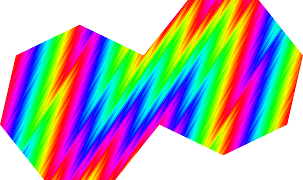
Eigenfunction in the double heptagon (7-gon), unstable direction:
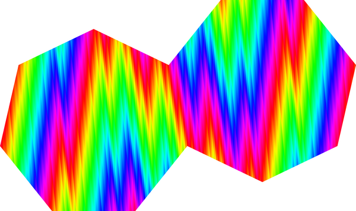
Eigenfunction in the double nonagon (9-gon), stable direction:
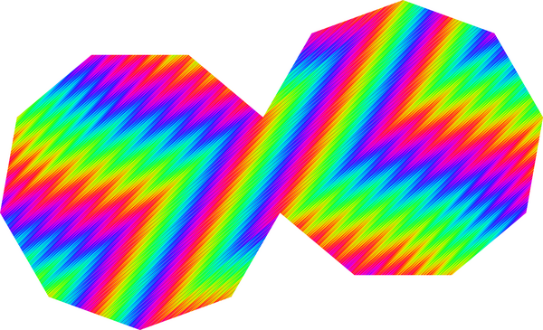
Eigenfunction in the double nonagon (9-gon), unstable direction:
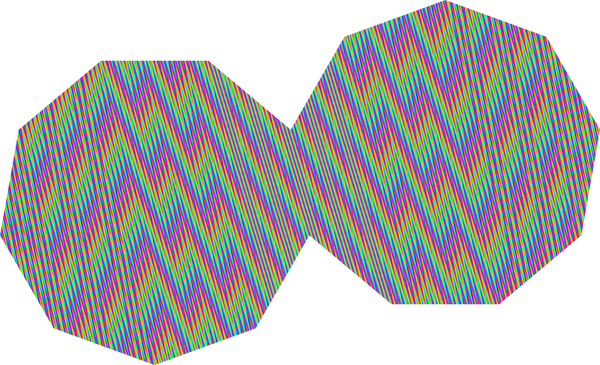
Eigenfunction in the tetradecagon (14-gon), stable direction:
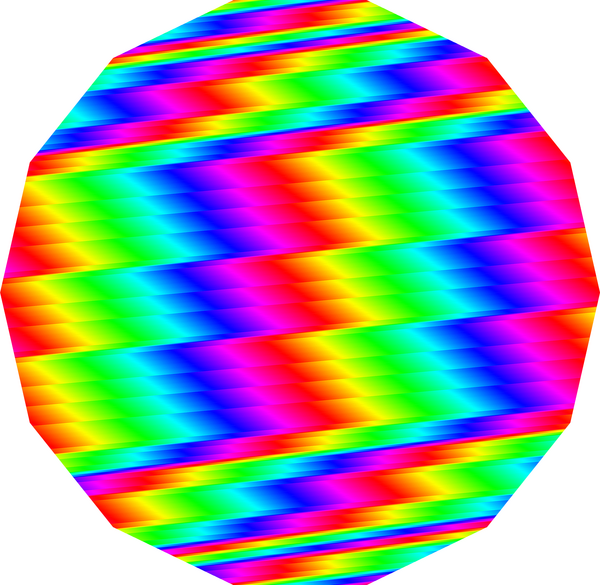
Eigenfunction in the tetradecagon (14-gon), unstable direction:
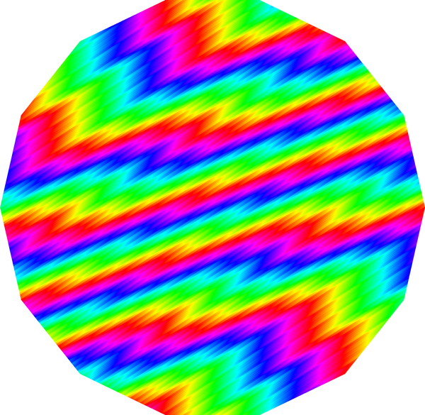
Eigenfunction in the hexadecagon (16-gon), stable direction:
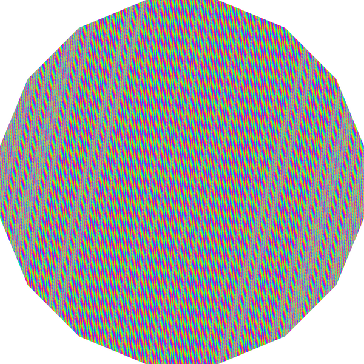
Eigenfunction in the hexadecagon (16-gon), unstable direction:
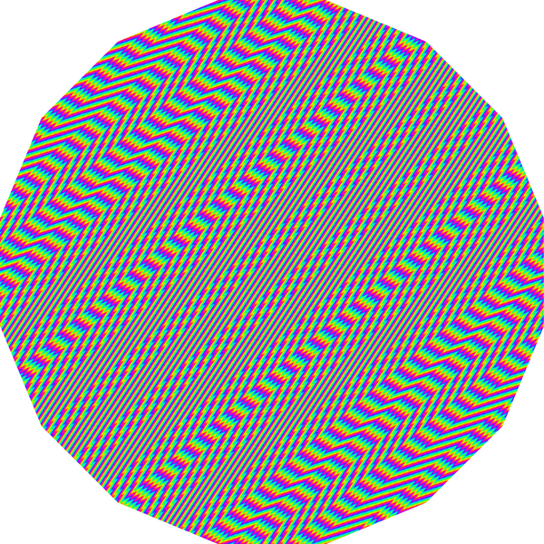
Eigenfunction in the octadecagon (18-gon), stable direction:
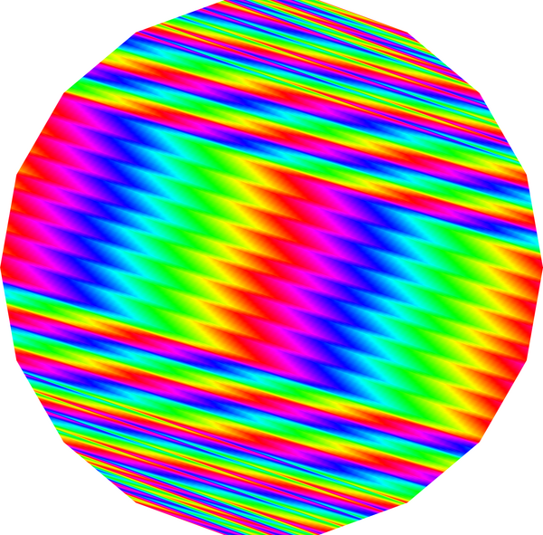
Eigenfunction in the octadecagon (18-gon), unstable direction:
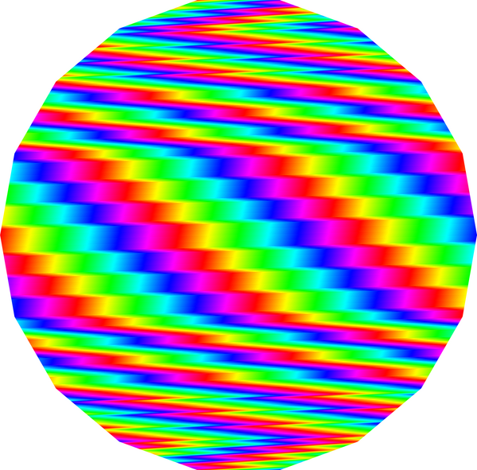
Eigenfunction in the icosagon (20-gon), stable direction:
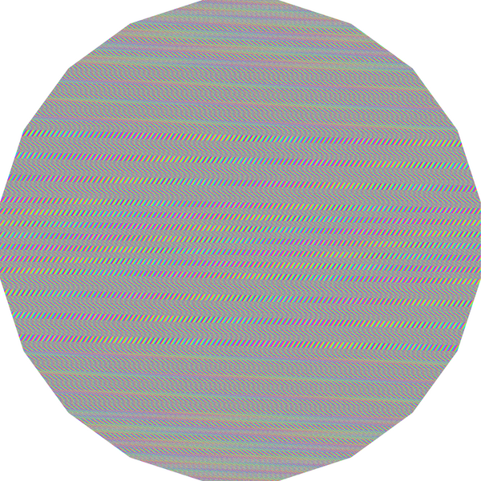
Eigenfunction in the icosagon (20-gon), unstable direction:
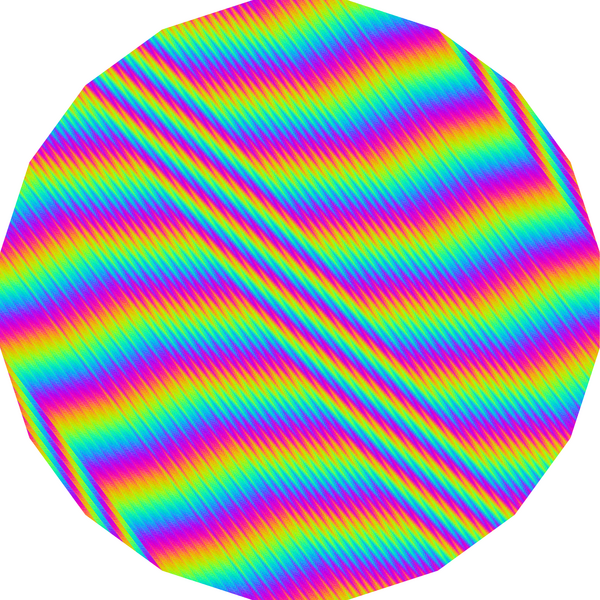
Eigenfunction in the icositetragon (24-gon), unstable direction:
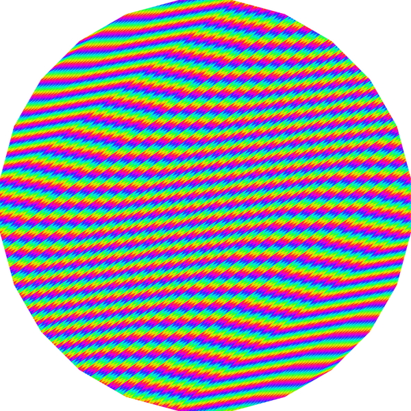
Eigenfunction in the triacontagon (30-gon), stable direction:
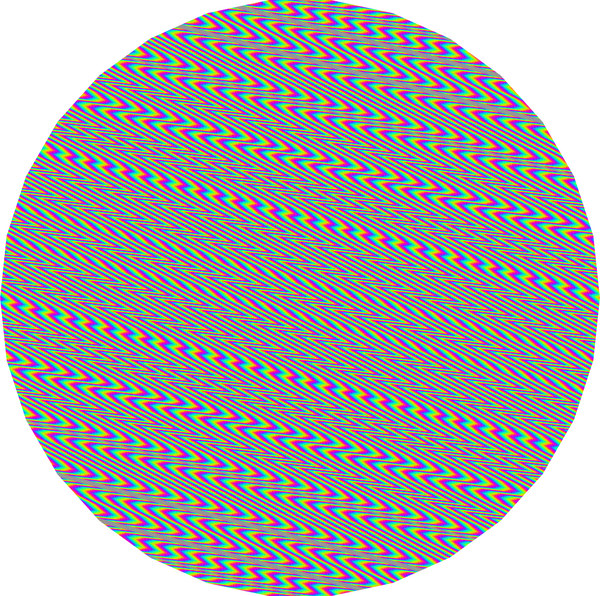
Eigenfunction in the triacontagon (30-gon), unstable direction:
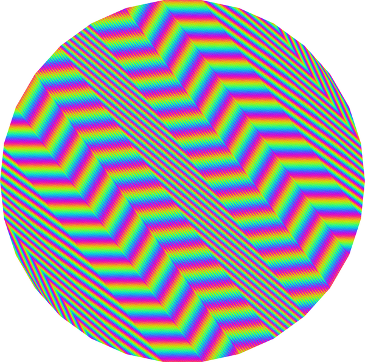
{kind=link}
{kind=link}
{kind=link}
{kind=link}
{kind=link}
{kind=link}
{kind=link}
{kind=link}
{kind=link}
{kind=link}
{kind=link}
{kind=link}
{kind=link}
{kind=link}
{kind=link}